FEM2D module¶
| Author: | Francois Cuvelier <cuvelier@math.univ-paris13.fr> |
|---|---|
| Date: | 15/09/2013 |
Contains functions to build some finite element matrices using  -Lagrange finite elements on a 2D mesh.
Each assembly matrix is computed by three different versions called base,
OptV1 and OptV2 (see here)
-Lagrange finite elements on a 2D mesh.
Each assembly matrix is computed by three different versions called base,
OptV1 and OptV2 (see here)
Contents
Assembly matrices (base, OptV1 and OptV2 versions)¶
Let 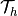 be a triangular mesh of 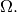
We denote by 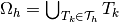 a triangulation of  with the following data structure:
with the following data structure:
![\mbox{\begin{tabular}{lccll}
\hline
\textbf{name} & \textbf{type} & \textbf{dimension} & \textbf{description}& \textbf{Python}\\
\hline
$\nq$ & integer & 1 & number of vertices& \texttt{nq}\\
$\nme$ & integer & 1 & number of elements& \texttt{nme}\\
$\q$ & double & $2 \times \nq$ &
\begin{minipage}[t]{7.9cm}
array of vertices coordinates. $\q(\nu,j)$ is the $\nu$-th coordinate of the $j$-th vertex,
$\nu\in\{1,2\}$, $j\in\{1,\hdots,\rm{n_q}\}.$
The $j$-th vertex will be also denoted by $\rm{q}^j$
\end{minipage}&
\begin{minipage}[t]{3cm}
\texttt{q} (transposed)\\
\texttt{q[j-1]} = $\q^j$
\end{minipage}\\
$\me$ & integer & $3 \times \nme$ &
\begin{minipage}[t]{7.9cm}
connectivity array. $\me(\beta,k)$ is the storage index of the $\beta$-th vertex
of the $k$-th element, in the array~$q$, for $\beta\in\{1,2,3\}$ and $k\in\{1,\hdots,{\nme}\}$
\end{minipage}&\texttt{me} (transposed)\\
$\rm areas$ & double & $1\times {\nme}$ &
\begin{minipage}[t]{7.9cm}
array of areas. ${\rm areas}(k)$ is the $k$-th triangle area,
$k\in\{1,\hdots,{\nme}\}$
\end{minipage}&\texttt{areas}\\
\hline
\end{tabular}}](_images/math/11700f93ddb0ff30873e9fdaccf82333c1401a49.png)
The -Lagrange basis functions associated to  are denoted by 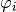
for all 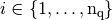 and defined by
are denoted by 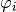
for all 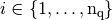 and defined by
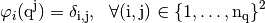
We also define the global alternate basis 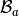 by

and the global block basis 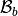 by
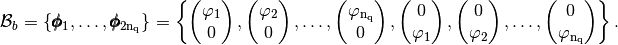
Mass Matrix¶
Assembly of the Mass Matrix by -Lagrange finite elements
using base, OptV1 and OptV2 versions respectively (see report).
The Mass Matrix is given by

Note
generic syntax:
M = MassAssembling2DP1<version>(nq,nme,me,areas)
- nq: total number of nodes of the mesh, also denoted by 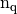,
- nme: total number of triangles, also denoted by
 ,
, - me: Connectivity array, (nme,3) array,
- areas: Array of areas, (nme,) array,
- returns a Scipy CSC sparse matrix of size 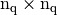
where <version> is base, OptV1 or OptV2
Benchmarks of theses functions are presented in Mass Matrix. We give a simple usage :
>>> from pyOptFEM.FEM2D import *
>>> Th=SquareMesh(5)
>>> Mbase = MassAssembling2DP1base(Th.nq,Th.nme,Th.me,Th.areas)
>>> MOptV1= MassAssembling2DP1OptV1(Th.nq,Th.nme,Th.me,Th.areas)
>>> print(" NormInf(Mbase-MOptV1)=%e " % NormInf(Mbase-MOptV1))
NormInf(Mbase-MOptV1)=6.938894e-18
>>> MOptV2= MassAssembling2DP1OptV2(Th.nq,Th.nme,Th.me,Th.areas)
>>> print(" NormInf(Mbase-MOptV2)=%e " % NormInf(Mbase-MOptV2))
NormInf(Mbase-MOptV2)=6.938894e-18
We can show sparsity of the Mass matrix :
>>> from pyOptFEM.FEM2D import * >>> Th=SquareMesh(20) >>> M=MassAssembling2DP1base(Th.nq,Th.nme,Th.me,Th.areas) >>> showSparsity(M)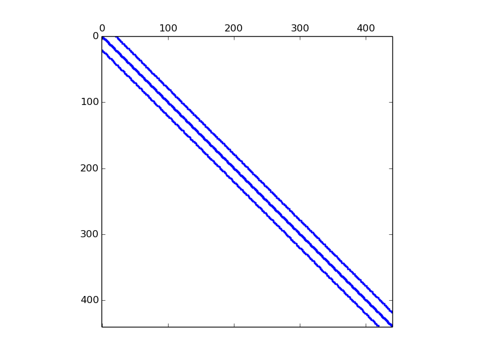Figure 1: Sparsity of Mass Matrix generated with command showSparsity(M)
Note
source code
- pyOptFEM.FEM2D.assembly.MassAssembling2DP1base(nq, nme, me, areas)[source]
Assembly of the Mass Matrix by
-Lagrange finite elements using base version (see report).
- pyOptFEM.FEM2D.assembly.MassAssembling2DP1OptV1(nq, nme, me, areas)[source]
Assembly of the Mass Matrix by
-Lagrange finite elements using OptV1 version (see report).
- pyOptFEM.FEM2D.assembly.MassAssembling2DP1OptV2(nq, nme, me, areas)[source]
Assembly of the Mass Matrix by
-Lagrange finite elements using OptV2 version (see report).
Stiffness Matrix¶
Assembly of the Stiffness Matrix by -Lagrange finite elements using base,
OptV1 and OptV2 versions respectively (see report).
The Stiffness Matrix 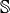 is given by
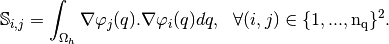
Note
generic syntax:
M = StiffAssembling2DP1<version>(nq,nme,q,me,areas)
- nq: total number of nodes of the mesh, also denoted by ,
- nme: total number of triangles, also denoted by ,
- q: Array of vertices coordinates, (nq,2) array
- me: Connectivity array, (nme,3) array,
- areas: Array of areas, (nme,) array,
- returns a Scipy CSC sparse matrix of size
where <version> is base, OptV1 or OptV2
Benchmarks of theses functions are presented in Stiffness Matrix. We give a simple usage :
>>> pyOptFEM.FEM2D import *
>>> Th=SquareMesh(5)
>>> Sbase = StiffAssembling2DP1base(Th.nq,Th.nme,Th.q,Th.me,Th.areas)
>>> SOptV1= StiffAssembling2DP1OptV1(Th.nq,Th.nme,Th.q,Th.me,Th.areas)
>>> print(" NormInf(Sbase-SOptV1)=%e " % NormInf(Sbase-SOptV1))
NormInf(Sbase-SOptV1)=0.000000e+00
>>> SOptV2= StiffAssembling2DP1OptV2(Th.nq,Th.nme,Th.q,Th.me,Th.areas)
>>> print(" NormInf(Sbase-SOptV2)=%e " % NormInf(Sbase-SOptV2))
NormInf(Sbase-SOptV1)=4.440892e-16
Note
source code
- pyOptFEM.FEM2D.assembly.StiffAssembling2DP1base(nq, nme, q, me, areas)[source]
Assembly of the Stiffness Matrix by
-Lagrange finite elements using base version (see report).
- pyOptFEM.FEM2D.assembly.StiffAssembling2DP1OptV1(nq, nme, q, me, areas)[source]
Assembly of the Stiffness Matrix by
-Lagrange finite elements using OptV1 version (see report).
- pyOptFEM.FEM2D.assembly.StiffAssembling2DP1OptV2(nq, nme, q, me, areas)[source]
Assembly of the Stiffness Matrix by
-Lagrange finite elements using OptV2 version (see report).
Elastic Stiffness Matrix¶
Assembly of the Elastic Stiffness Matrix by -Lagrange finite elements using base,
OptV1 and OptV2 versions respectively (see report).
The Elastic Stiffness Matrix  is given by
is given by
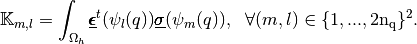
where
 and
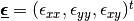
are the elastic stress and strain tensors respectively.
and
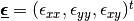
are the elastic stress and strain tensors respectively.
Note
generic syntax:
M = StiffElasAssembling2DP1<version>(nq,nme,q,me,areas,la,mu,Num)
nq: total number of nodes of the mesh, also denoted by ,
nme: total number of triangles, also denoted by
,- q: array of vertices coordinates,
- (nq,2) array for base and OptV1,
- (2,nq) array for OptV2 version,
- me: Connectivity array,
- (nme,3) array for base and OptV1,
- (3,nme) array for OptV2 version,
areas: (nme,) array of areas,
la: the first Lame coefficient in Hooke’s law, denoted by
 ,
,mu: the second Lame coefficient in Hooke’s law, denoted by
 ,
,- Num:
- 0: global alternate numbering with local alternate numbering (classical method),
- 1: global block numbering with local alternate numbering,
- 2: global alternate numbering with local block numbering,
- 3: global block numbering with local block numbering.
returns a Scipy CSC sparse matrix of size 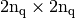
where <version> is base, OptV1 or OptV2
Benchmarks of theses functions are presented in Elastic Stiffness Matrix. We give a simple usage :
>>> from pyOptFEM.FEM2D import *
>>> Th=SquareMesh(5)
>>> Kbase = StiffElasAssembling2DP1base(Th.nq,Th.nme,Th.q,Th.me,Th.areas,2,0.5,0)
>>> KOptV1= StiffElasAssembling2DP1OptV1(Th.nq,Th.nme,Th.q,Th.me,Th.areas,2,0.5,0)
>>> print(" NormInf(Kbase-KOptV1)=%e " % NormInf(Kbase-KOptV1))
NormInf(Kbase-KOptV1)=8.881784e-16
>>> KOptV2= StiffElasAssembling2DP1OptV2(Th.nq,Th.nme,Th.q,Th.me,Th.areas,2,0.5,0)
>>> print(" NormInf(Kbase-KOptV2)=%e " % NormInf(Kbase-KOptV2))
NormInf(Kbase-KOptV2)=1.776357e-15
We now illustrate the consequences of the choice of the global basis on matrix sparsity
global alternate basis (Num=0 or Num=2)
>>> from pyOptFEM.FEM2D import * >>> Th=SquareMesh(15) >>> K0=StiffElasAssembling2DP1OptV1(Th.nq,Th.nme,Th.q,Th.me,Th.areas,2,0.5,0) >>> showSparsity(K0)
Figure 2: Sparsity of the Elastic Stiffness Matrix generated with global alternate numbering (Num=0 or 2)
>>> K3=StiffElasAssembling2DP1OptV1(Th.nq,Th.nme,Th.q,Th.me,Th.areas,2,0.5,3) >>> showSparsity(K3)
global block basis (Num=1 or Num=3)
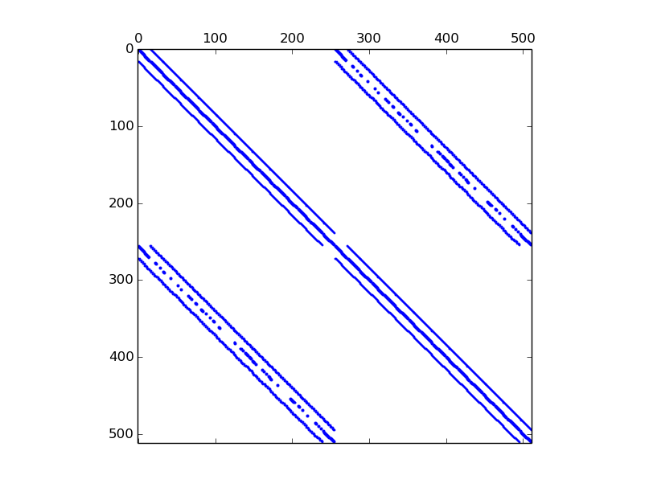Figure 3: Sparsity of the Elastic Stiffness Matrix generated with global block numbering (Num=1 or 3)
Note
source code
- pyOptFEM.FEM2D.assembly.StiffElasAssembling2DP1base(nq, nme, q, me, areas, la, mu, Num)[source]
Assembly of the Elasticity Stiffness Matrix by
-Lagrange finite elements using OptV2 version (see report).
- pyOptFEM.FEM2D.assembly.StiffElasAssembling2DP1OptV1(nq, nme, q, me, areas, la, mu, Num)[source]
Assembly of the Elasticity Stiffness Matrix by
-Lagrange finite elements using OptV1 version (see report).
- pyOptFEM.FEM2D.assembly.StiffElasAssembling2DP1OptV2(nq, nme, q, me, areas, la, mu, Num)[source]
Assembly of the Elasticity Stiffness Matrix by
-Lagrange finite elements using OptV2 version (see report).
Element matrices (used by base and OptV1 versions)¶
Let  be a triangle, of area 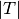 and with 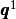, 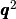 and 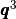 its three vertices. We denote by
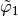, 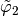 and
be a triangle, of area 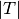 and with 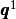, 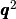 and 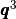 its three vertices. We denote by
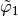, 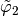 and  the -Lagrange local basis functions such that 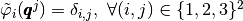 .
the -Lagrange local basis functions such that 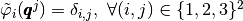 .
We also define the local alternate basis 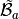 by
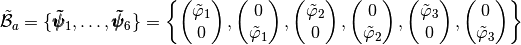
and the local block basis 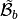 by
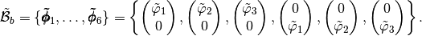
The elasticity tensor, , obtained from Hooke’s law with an isotropic material,
defined with the Lamé parameters and is given by
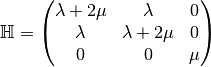
and, for a function 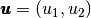 the strain tensors is given by
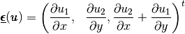
Element Mass Matrix¶
The element Mass matrix 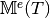 for the triangle
is defined by
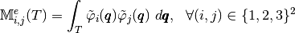
We obtain :
(1)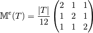
Element Stiffness Matrix¶
The element stiffness matrix, 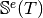,
for the is defined by

We have :
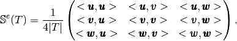
where 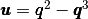, 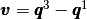 and 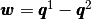.
Element Elastic Stiffness Matrix¶
Let , and .
The element elastic stiffness matrix, 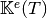, for a given triangle
in the local alternate basis is defined byWe also have
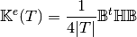
where is the elasticity tensor and
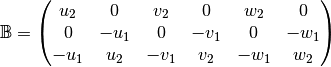
Note
- pyOptFEM.FEM2D.elemMatrix.ElemStiffElasMat2DP1Ba(ql, area, H)[source]
Returns the element elastic stiffness matrix for a given triangle
in the local alternate basis Parameters: - ql (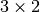 numpy array) – contains the three vertices of the triangle : ql[0], ql[1] and ql[2],
- area (float) – area of the triangle ,
- H ( numpy array) – Elasticity tensor, .
Returns: in basis.
Type : 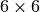 numpy array of floats.
The element elastic stiffness matrix, , for a given triangle
in the local block basis is defined by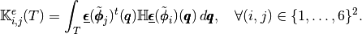
We also have
where is the elasticity tensor and
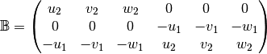
Note
- pyOptFEM.FEM2D.elemMatrix.ElemStiffElasMat2DP1Bb(ql, area, H)[source]
Returns the element elastic stiffness matrix for a given triangle
in the local block basis Parameters: - ql ( numpy array) – contains the three vertices of the triangle : ql[0], ql[1] and ql[2],
- area (float) – area of the triangle,
- H ( numpy array) – Elasticity tensor, .
Returns: in basis.
Type : numpy array of floats
Vectorized tools (used by OptV2 version)¶
Vectorized computation of basis functions gradients¶
By construction, the gradients of basis functions are constants on each element 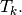 So, we denote, by the array defined, by
On a triangle we define and Then, we have
With these formulas, we obtain the vectorized algorithm given in Algorithm 12.
Algorithm 12
Vectorized element matrices (used by OptV2 version)¶
Element Mass Matrix¶
We have
Then with  definition (see Section New Optimized assembly algorithm (OptV2 version)) , we obtain
definition (see Section New Optimized assembly algorithm (OptV2 version)) , we obtain
We represent in figure 13 the corresponding row-wise operations.

Figure 5: Construction of  associated to 2d Mass matrix in
associated to 2d Mass matrix in
So the vectorized algorithm for computation is simple and given in Algorithm 14.
Algorithm 14
Note
- pyOptFEM.FEM2D.elemMatrixVec.ElemMassMat2DP1Vec(areas)[source]
Computes all the element Mass matrices
 for
for 
Parameters: areas ( numpy array of floats) – areas of all the mesh elements.Returns: a one dimensional numpy array of size 
Element Stiffness Matrix¶
We have 

Using vectorized algorithm function given in Algorithm 12, we obtain
the vectorized algorithm 15 for computation for the Stiffness matrix in 2d.
Algorithm 15
Note
- pyOptFEM.FEM2D.elemMatrixVec.ElemStiffMat2DP1Vec(nme, q, me, areas)[source]
Computes all the element stiffness matrices
 for
for Parameters: - nme (int) – number of mesh elements,
- q ( numpy array of floats) – mesh vertices,
- me ( numpy array of integers) – mesh connectivity,
- areas ( numpy array of floats) – areas of all the mesh elements.
Returns: a one dimensional numpy array of size
Element Elastic Stiffness Matrix¶
We define on
 the local alternate basis
the local alternate basis  by
bywhere
 With notations of Presentation, we have
With notations of Presentation, we have

with,
(2)
For example, we can explicitly compute the first two terms in the first column of
 which are given by
which are given by![\begin{array}{lcl}
\StiffElasElem_{1,1}(T_k)&=&\int_{T_k} \mathcal{H}(\BasisFuncTwoD^k_{1},\BasisFuncTwoD^k_{1})(\q)d\q\\
&=&\int_{T_k} \mathcal{H}\left(
\begin{pmatrix}
\BasisFunc^k_{1}\\
0
\end{pmatrix},
\begin{pmatrix}
\BasisFunc^k_{1}\\
0
\end{pmatrix}
\right)(\q)d\q\\
&=&|T_k|
\DOT{\begin{pmatrix} \gamma & 0\\ 0 & \mu \end{pmatrix}\GRAD \BasisFunc^k_{1} }{\GRAD \BasisFunc^k_{1}}
=|T_k|\left(\gamma\DP{\BasisFunc^k_{1}}{x}\DP{\BasisFunc^k_{1}}{x}+\mu\DP{\BasisFunc^k_{1}}{y}\DP{\BasisFunc^k_{1}}{y}\right).
\end{array}](_images/math/9e7a2b6420d9705d3e25776d312bba1f8ec44aa0.png)
and
Using vectorized algorithm function given in Algorithm 12, we obtain the vectorized algorithm 15 for
computation for the Elastic Stiffness matrix in 2d.Algorithm 16
Note
- pyOptFEM.FEM2D.elemMatrixVec.ElemStiffElasMatBaVec2DP1(nme, q, me, areas, L, M, **kwargs)[source]
Computes all the element elastic stiffness matrices
 for in local alternate basis.
for in local alternate basis.Parameters: Returns: a (36*nme,) numpy array of floats.
We define on
the local block basis  by
bywhere
For example, using formula (2), we can explicitly compute the first two terms in the first column of
which are given by![\begin{array}{lcl}
\StiffElasElem_{1,1}(T_k)&=&\int_{T_k} \mathcal{H}(\BasisFuncTwoDB^k_{1},\BasisFuncTwoDB^k_{1})(\q)d\q\\
&=&\int_{T_k} \mathcal{H}\left(
\begin{pmatrix}
\BasisFunc^k_{1}\\
0
\end{pmatrix},
\begin{pmatrix}
\BasisFunc^k_{1}\\
0
\end{pmatrix}
\right)(\q)d\q\\
&=&|T_k|
\DOT{\begin{pmatrix} \gamma & 0\\ 0 & \mu \end{pmatrix}\GRAD \BasisFunc^k_{1} }{\GRAD \BasisFunc^k_{1}}
=|T_k|\left(\gamma\DP{\BasisFunc^k_{1}}{x}\DP{\BasisFunc^k_{1}}{x}+\mu\DP{\BasisFunc^k_{1}}{y}\DP{\BasisFunc^k_{1}}{y}\right).
\end{array}](_images/math/d82b6c2755b1a8ee2648b886a646dbf5f6eb8987.png)
and
![\begin{array}{lcl}
\StiffElasElem_{2,1}(T_k)&=&\int_{T_k} \mathcal{H}(\BasisFuncTwoDB^k_{1},\BasisFuncTwoDB^k_{2})(\q)d\q\\
&=&\int_{T_k} \mathcal{H}\left(
\begin{pmatrix}
\BasisFunc^k_{1}\\
0
\end{pmatrix},
\begin{pmatrix}
\BasisFunc^k_{2}\\
0
\end{pmatrix}
\right)(\q)d\q\\
&=&|T_k|
\DOT{\begin{pmatrix} \gamma & 0\\ 0 & \mu \end{pmatrix}\GRAD \BasisFunc^k_{1} }{\GRAD \BasisFunc^k_{2}}
=|T_k|\left(\gamma\DP{\BasisFunc^k_{1}}{x}\DP{\BasisFunc^k_{2}}{x}+\mu\DP{\BasisFunc^k_{1}}{y}\DP{\BasisFunc^k_{2}}{y} \right).
\end{array}](_images/math/debc133dca5b3daa5e570d6215b69a1bf2551a18.png)
Using vectorized algorithm function given in Algorithm 12, we obtain the vectorized algorithm 17 for
computation for the Elastic Stiffness matrix in 2d.Algorithm 17
Note
- pyOptFEM.FEM2D.elemMatrixVec.ElemStiffElasMatBbVec2DP1(nme, q, me, areas, L, M, **kwargs)[source]
Computes all the element elastic stiffness matrices
for in local block basis.Parameters: Returns: a (36*nme,) numpy array of floats.
Mesh¶
- class pyOptFEM.FEM2D.mesh.SquareMesh(N, **kwargs)[source]¶
Creates meshes of the unit square . Class attributes are :
nq, total number of mesh vertices (points), also denoted .
nme, total number of mesh elements (triangles in 2d),
version, mesh structure version,
q, Numpy array of vertices coordinates, dimension (nq,2) (version 0) or (2,nq) (version 1).
q[j] (version 0) or q[:,j] (version 1) are the two coordinates of the
 -th vertex,
-th vertex, me, Numpy connectivity array, dimension (nme,3) (version 0) or (3,nme) (version 1).
me[k] (version 0) or me[:,k] (version 1) are the storage index of the three vertices of the
 -th triangle in the array q of vertices coordinates, .
-th triangle in the array q of vertices coordinates, .areas, Array of mesh elements areas, (nme,) Numpy array.
areas[k] is the area of
-th triangle, k in range(0,nme)
Parameters: N – number of points on each side of the square optional parameter : version=0 or version=1
>>> from pyOptFEM.FEM2D import * >>> Th=SquareMesh(3) >>> Th.nme,Th.nq (18, 16) >>> Th.q array([[ 0. , 0. ], [ 0.33333333, 0. ], [ 0.66666667, 0. ], [ 1. , 0. ], [ 0. , 0.33333333], [ 0.33333333, 0.33333333], [ 0.66666667, 0.33333333], [ 1. , 0.33333333], [ 0. , 0.66666667], [ 0.33333333, 0.66666667], [ 0.66666667, 0.66666667], [ 1. , 0.66666667], [ 0. , 1. ], [ 0.33333333, 1. ], [ 0.66666667, 1. ], [ 1. , 1. ]]) >>> PlotMesh(Th)
- class pyOptFEM.FEM2D.mesh.getMesh(meshfile, **kwargs)[source]¶
Reads a FreeFEM++ mesh from file meshfile. Class attributes are :
nq, total number of mesh vertices (points), also denoted .
nme, total number of mesh elements (triangles in 2d),
version, mesh structure version,
q, Numpy array of vertices coordinates, dimension (nq,2) (version 0) or (2,nq) (version 1).
q[j] (version 0) or q[:,j] (version 1) are the two coordinates of the
-th vertex, me, Numpy connectivity array, dimension (nme,3) (version 0) or (3,nme) (version 1).
me[k] (version 0) or me[:,k] (version 1) are the storage index of the three vertices of the
-th triangle in the array q of vertices coordinates, .areas, Array of mesh elements areas, (nme,) Numpy array.
areas[k] is the area of
-th triangle, k in range(0,nme)
Parameters: N – number of points on each side of the square optional parameter : version=0 or version=1
>>> from pyOptFEM.FEM2D import * >>> Th=getMesh('mesh/disk4-1-5.msh') >>> PlotMesh(Th)

{kind=link}
{kind=link}
{kind=link}
{kind=link}
{kind=link}
{kind=link}
{kind=link}
{kind=link}
{kind=link}
{kind=link}